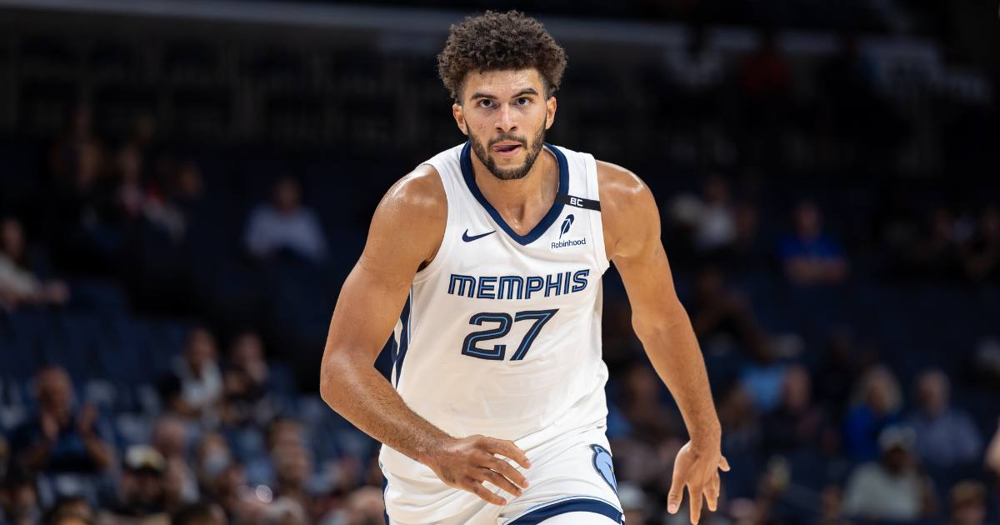

Grizzlies Stay Perfect at 6-0: Boozer's Career-High 27 Routs the Kings 136-105
Rookie Cam Boozer scored a career-high 27 points and Isaiah Stewart added 24 off the bench as Memphis routed Sacramento 136-105, remaining the NBA's only unbeaten team and matching the best start in franchise history.

The Memphis Grizzlies are the NBA's last unbeaten team, and they are not sneaking up on anyone anymore. On Saturday night at FedExForum, Memphis routed the Sacramento Kings 136-105 behind a career-high 27 points from rookie Cam Boozer, moving to 6-0 and matching the best start in franchise history — a mark first set by the 2014-15 team.
Boozer shot 8-of-14, including three three-pointers, and grabbed nine rebounds. Isaiah Stewart added a season-high 24 points off the bench in just 21 minutes, going 8-of-9 from the floor. Memphis got 81 points from its bench and shot 19-of-38 from deep, turning a competitive game into a laugher with a 42-25 third quarter that stretched the lead to 30.
How it happened
Sacramento actually had a puncher's chance early, riding rookie guard Darius Acuff Jr., who scored a career-high 38 points with nine three-pointers on 14 attempts. But Memphis's depth kept coming in waves — the Grizzlies' bench outscored most teams' starters — and the Kings, now 0-6 and one of two winless teams left in the league, had no second act once the third-quarter avalanche started.
Boozer's night is the headline, but the shape of the win is the story. This is the same rookie who posted his first career triple-double two nights earlier in Portland. Back-to-back signature performances from a first-year player, on a team that keeps winning by 30, is how a Rookie of the Year case gets built before Thanksgiving.
The bigger picture
Memphis became the league's only unbeaten team when Houston lost to Dallas on Friday, and Saturday's win means the Grizzlies stand alone at 6-0. The 2014-15 Grizzlies — the grit-and-grind peak, Marc Gasol and Zach Randolph and 55 wins — are the only other Memphis team to open 6-0. That squad set the standard for what a Grizzlies season can be. This one is writing its own version, faster and younger.
The schedule doesn't get easier — Memphis hosts New Orleans next — but unbeaten runs this deep into a season change how opponents prepare. Nobody is catching the Grizzlies flat anymore. They are winning anyway.
Sources: Reuters, TalkBasket, Deadspin
Gear up: Fanatics